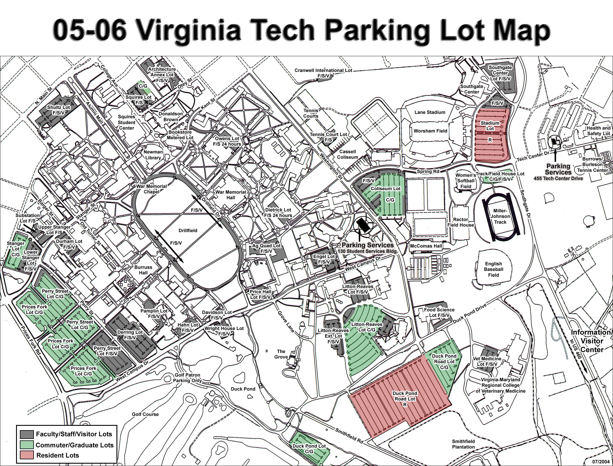

Where to park nearest Shanks Hall
There is ample parking all over the Virginia Tech campus, but below are the best spots to ensure a clear and easy walk to Shanks Hall.
Make sure you have reached the Virginia Tech campus before following these directions. Refer to the campus map below if you need to.
- Head under Torgerson Bridge down the Alumni Mall towards N. Main street.
- Parallel park in the parking spaces that are on this road.
- If you are able to find a spot here, you can turn facing away from Squires Student Center and walk up alongside the Moss Arts Center. You'll find Shanks Hall on the left side of the Center.
- If you aren't able to find parking on Alumni Mall, loop back so you are driving on the Mall towards the Drillfield, if you loop around the Drillfield, you'll see that there are a number of parking spaces there, if you find one, park.
- From the Drillfield, you can walk to Shanks Hall by walking past Major Williams Hall, and into the quad with a statue of a walking man.
- Finally, if you are unable to find parking in either of these places, turn off of Drillfield Drive onto Stanger Street, and park in the Upper Stanger Lot.
- You can walk from this lot to Shanks Hall by turning onto Turner Street, and following the road until you see Zaxby's Chicken. Shanks Hall will be on the opposite side of the street.
Figure: Virginia Tech Parking Map
